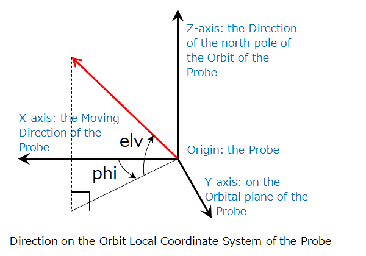
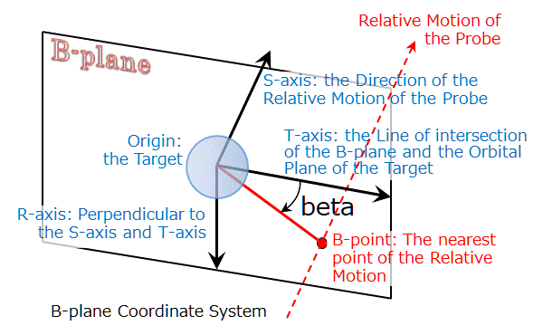

This page provides quick guides for SSVG (Solar System Voyager). We recommend narrowing the width of the window or using a smartphone to read.
|
|
← Open this page with a smartphone |
If you wish to know details of SSVG, please refer "SSVG User's Guide" contained in SSVG.
| proc. | SSVG window > Menu > File > Open |
Click the "File" of the menu of the SSVG window and click the "Open" on the list. The "Select Flight Plan File" dialog appears. You will find the file in it.
| proc. | SSVG window > Menu > File > Open |
Click the "File" of the menu of the SSVG window and click the "Open" on the list. The "Select Flight Plan File" dialog appears. If you find the file in it, open it.
If you cannot find the file, get the file again, import it, and try again.
When the Flight Plan requires SPK file(s), get the file(s) from the author of the Flight Plan and import them beforehand.
| proc. | SSVG window > Menu > File > Import > Flight Plan file |
We recommend importing Flight Plan files when you received them.
Click the "File" of the menu of the SSVG window, click the "Import" on the list, and click the "Flight Plan file." Then find the file in the dialog that appeared and open it. SSVG will import the file and show you the result.
When SSVG has a Flight Plan file with the same name, it imports the file with a modified file name to avert the collision. SSVG adds (2) or (3) and so on, at the end of the file name.
| proc. | SSVG window > Menu > File > Import > SPK file |
We recommend importing SPK files when you got them.
Click the "File" of the menu of the SSVG window, click the "Import" on the list, and click the "SPK file." Then find the file in the dialog and open it. SSVG will import the file and show you the result.
When SSVG has an SPK file with the same name, it imports the file with a modified file name to avert the collision. SSVG adds (2) or (3) and so on at the end of the file name. In this case, you may need to modify the Flight Plan that uses the SPK file. (You need to choose a celestial body for the Target)
| proc. | SSVG window > [EXECUTE] button |
When you clicked the [EXECUTE] button, SSVG executes the Maneuver of the Next Line* and shows the state of the Probe. The line just below the current Next Line becomes the new Next Line.
* The Maneuver Table contains one line (row) that has a "Next" in the Status column. That is the Next Line.
| proc. | SSVG window > Select a line > [EXECUTE *] button |
To execute several Maneuvers in a row, select the last line of the execution and click the [EXECUTE *] button.
SSVG executes the Maneuvers from the Next Line through the selected line and shows the last state of the Probe. The line just below the selected line becomes the new Next Line.
| create | SSVG window > Menu > Checkpoint > Create |
| resume | SSVG window > Menu > Checkpoint > Resume |
When you have executed Maneuver(s), you can create a Checkpoint that contains the current state of the Probe. After subsequent executions of some Maneuvers, you can resume the state of the Probe from the Checkpoint.
To create a Checkpoint, click the "Checkpoint" of the menu and click the "Create" of the list.
To resume the state from the Checkpoint, click the "Checkpoint" of the menu and click the "Resume" of the list.
When you perform cut-and-try of a Maneuver, you can use a Checkpoint to ease the repetition.
| proc. A | Execute a Maneuver, or |
| proc. B | SSVG window > [SHOW Orbit] button, or |
| proc. C | Show Orbit window > Zero the Elapsed Time |
When you execute a Maneuver, SSVG shows the current position of the Probe with a × mark on the 3D Orbit window.
During a review of spaceflight, click the [SHOW Orbit] button of the SSVG window to terminate the review. SSVG shows the current position of the Probe.
If the Elapsed Time of the Show Orbit window is not zero, the × mark indicates a position in the future (or the past) of the Probe but the current position. Zero the Elapsed Time to see the current position of the Probe.
| proc. A | Show Orbit window > Buttons of Time Manipulator, or |
| proc. B | Show Orbit window > Elapsed Time (days) |
When you click one of the buttons of the Time Manipulator of the Show Orbit window, SSVG shows the position of the Probe in the future or the past. Two buttons on both end (<< and >>) are for fast-backward and fast-forward. You can change the coarseness/fineness of the time by manipulating the "coarse/fine" spinner.
You can change the time to see also by editing the input field of the "Elapsed Time" and click the [Apply] button (or type the Enter).
| proc. | See the SSVG window |
SSVG shows the current state of the Probe on the Current Status area of the SSVG window.
The information includes classical orbital elements (semi-major axis, eccentricity, inclination, etc).
| proc. | See the Show Orbit window |
The lower part of the Show Orbit window contains the position and the velocity of the Target relative to the Probe and the line of sight velocity of the Target from the Probe.
See the following figure about the two angles phi and elv.

The line of sight velocity indicates the velocity by which the Target is departing from the Probe. When Target is approaching, it shows a negative value.
| zoom | 3D Orbit window > Move the mouse up/down with the right button held down |
| rotate | 3D Orbit window > Move the mouse with the left button held down |
To zoom the 3D chart, put the mouse cursor on the 3D Orbit window and move the mouse up or down with the right button held down. Downward movement zooms in the chart, upward zooms out.
To rotate the 3D chart, put the mouse cursor on the 3D Orbit window and move the mouse with the left button held down. The chart rotates with the movement of the mouse cursor.
The pivot of the rotation and zooming is the center of the chart.
| proc. | Show Orbit window > Look at |
You can change the center of the 3D chart by selecting one of the items of the "Look at" group of the Show Orbit window.
The center of the chart is the pivot of the rotation and zooming of the chart.
| proc. | Show Orbit window > Show |
You can choose the show or hide the following items of the 3D chart by checking/erasing of the checkboxes of the "Show" group of the Show Orbit window.
The followings are the main items shown on the 3D Orbit window.
| The Probe | |
| The two-body orbit of the Probe | |
|
|
The flown trajectory of the Probe |
| The Target | |
| The two-body orbit of the Target | |
| The Sun | |
| The Planets and the Moon of the Earth (the Moon appears as a + mark only) |
| proc. A | SSVG window > [REVIEW Recent] button, and |
| proc. B | Flight Review window > buttons of the Review Manipulator |
Click the [REVIEW Recent] button just after the execution of a FLYTO Maneuver to review the state of the spaceflight.
The Flight Review window replaces the Show Orbit window below the SSVG window.
Click the buttons of the "Review Manipulator" to see the position and orbit of the Probe on each integration step of the FLYTO Maneuver.
To fast-forward or fast-backward the review, click one of the two buttons ( [<<] or [>>] ) placed on the outer side of the "Review Manipulator." You can change the quickness of them by manipulating the "Quickness" spinner.
| proc. A | SSVG window > [REVIEW Through] button, and |
| proc. B | Review Throughout window > buttons of the Review Manipulator |
Click the [REVIEW Through] button to review the progress through all executed Maneuvers.
The Review Throughout window replaces the Show Orbit window below the SSVG window.
You can see the state of the Probe at the end of each Maneuver. For a FLYTO Maneuver, you can see it also at the beginning of the flight and each integration step.
To review the progress of the spaceflight, use the six buttons of the "Review Manipulator." Click one of the buttons of both ends ( [|<<] and [>>|] ) to change Maneuver to see. You use the other four buttons in reviewing a FLYTO Maneuver.
| proc. | SSVG window > Menu > Edit > Probe |
To edit the properties of the Probe, click the "Edit" of the menu and click the "Probe" of the list. The "Edit Probe Properties" window appears.
You can edit the name and mass of the Probe and choose a Space Bases from which the Probe starts the spaceflight.
The editing of the Probe properties clears the execution state of the Flight Plan.
| proc. | SSVG window > Menu > Edit > Target |
To choose a celestial body for the Target, click the "Edit" of the menu and click the "Target" of the list. The "Select New Target" window appears.
Select one of the two radio buttons of the "Planet" or the "Small Body" at first.
When you select the "Planet," you can choose the celestial body from the adjacent drop-down list. The list contains eight planets, Pluto (dwarf planet), and the Moon of the Earth.
When you select the "Small Body," you can choose one of the small celestial bodies for which you have SPK files. The procedure is as follows:
The editing of the Target does not affect the execution state of the Flight Plan.
| proc. A | SSVG window > Edit the last line of the Maneuver Table, or |
| proc. B | SSVG window > Select a line of the Maneuver Table > [INS *] button |
The Maneuver Table (a large table placed in the upper part of the SSVG window) contains an empty Maneuver at the end of the Flight Plan. When you edit it, SSVG adds the Maneuver at the end of the Flight Plan.
If you wish to insert a Maneuver into a specific place of the Flight Plan, select the line of the Maneuver Table on which the new Maneuver will be placed and click the [INS *] button. SSVG inserts an empty Maneuver there.
| proc. | SSVG window > Select a line of the Maneuver Table > [DEL *] button |
To delete a Maneuver of the Flight Plan, select the line of the Maneuver Table and click the [DEL *] button. SSVG requests the confirmation of the deletion and deletes the Maneuver.
There is no way to undo the deletion.
| proc. A | SSVG window > [EDIT Next] button, or |
| proc. B | SSVG window > Select a line of the Maneuver Table > [EDIT *] button, or |
| proc. C | SSVG window > Double-click a line of the Maneuver Table |
When you click the [EDIT Next] button, SSVG starts editing the Maneuver of the Next Line. The Next Line of the Maneuver Table indicates a "Next" mark on the "Status" column.
When you select a line of the Maneuver Table and click the [EDIT *] button, SSVG starts editing the Maneuver of the line.
When you double-click a line of the Maneuver Table, SSVG starts editing the Maneuver of the line.
If you edit a Maneuver that is not in the Next Line, you can use only a portion of the functions of the Maneuver Editor.
You can specify the Type of Maneuver only when the Maneuver was empty at the start of the editing. If you wish to change the Type of an existing Maneuver, delete it, insert a new Maneuver, and edit it.
| proc. | Maneuver Editor window > Maneuver Type |
When you edit an empty Maneuver, choose the type of the Maneuver at first.
If the Maneuver is in the first line of the Maneuver Table, SSVG assigns START for the type because the first Maneuver of the Flight Plan should be a START Maneuver.
To choose the Type of the Maneuver, click the drop-down list of "Maneuver Type" and select one of the Types on the list. You will be able to configure the Maneuver.
The Types of Maneuver are as follows:
| proc. A | Maneuver Editor window > Start Time > [Edit Time] button, and |
| proc. B | Maneuver Editor window > Parameters Table |
A START Maneuver makes the Probe leave the Space Base. It requires the Start Time of the spaceflight and the delta-V.
To edit the Start Time, click the [Edit Time] button of the "Start Time" group. The "Date and Time Editor" window appears. The time is in TDB, the Barycentric Dynamical Time. The clock time in TDB is near to UT, the Universal Time, but there is some difference of roughly one minute between them.
To specify the delta-V, click each cell of the "Parameters" table and edit it.
The delta-V is the relative velocity of the Probe from the Space Base when it leaves. We use the Orbit Local Coordinate System of the Space Base to specify the vector.
The next figure shows the vector of the delta-V ("V"), the absolute value of the delta-V ("dv"), two angles to indicate the direction of the delta-V ("phi" and "elv"). You should specify the three values dv, phi, and elv for the Maneuver.
When you are editing a START Maneuver of the Next Line, the clicking of the [SHOW Orbit] button of the Maneuver Editor window results in the forecast of the Maneuver using the current parameters. You will see the forecasted result of the Maneuver on the 3D Orbit window and the Show Orbit window.
When you are editing a START Maneuver of the Next Line, you can use the FTA or the Optimize Assistant to configure the parameters. See the following chapters.
| proc. | Maneuver Editor window > Parameters Table |
A CP Maneuver performs an orbital transition with the chemical propulsion engine. It requires the delta-V of the orbital transition.
To specify the delta-V, click each cell of the "Parameters" table and edit it.
We use the Orbit Local Coordinate System of the Probe to specify the vector of the delta-V.
The next figure shows the vector of the delta-V ("V"), the absolute value of the delta-V ("dv"), two angles to indicate the direction of the delta-V ("phi" and "elv"). You should specify the three values dv, phi, and elv for the Maneuver.
When you are editing a CP Maneuver of the Next Line, the clicking of the [SHOW Orbit] button of the Maneuver Editor window results in the forecast of the Maneuver using the current parameters. You will see the forecasted result of the Maneuver on the 3D Orbit window and the Show Orbit window.
When you are editing a CP Maneuver of the Next Line, you can use the FTA or the Optimize Assistant to configure the parameters. See the following chapters.
| proc. | Maneuver Editor window > Parameters Table |
An EP_ON Maneuver turns on the electric propulsion engine. It requires the acceleration vector of the engine and the Thrust Vector Mode.
To specify the parameters, click each cell of the "Parameters" table and edit it.
We use the Orbit Local Coordinate System of the Probe to specify the acceleration vector.
The next figure shows the acceleration vector ("V"), the absolute value of the acceleration in velocity variance per day ("dvpd"), two angles to indicate the direction of the vector ("phi" and "elv"). You should specify the three values dvpd, phi, and elv for the Maneuver.

The Thrust Vector Mode ("tvmode") of the EP_ON Maneuver defines the way to control the direction of the thrust. It takes one of the two values "L" or "E" as follows:
The thrust of the electric propulsion engine works during spaceflights or in other words, executions of FLYTO Maneuver. It changes the orbit of the Probe gradually during the spaceflights.
Therefore, the orbit of the Probe displayed during the editing of the Maneuver or just after the execution of it does contain no effect of the thrust.
| proc. | Not required |
An EP_OFF Maneuver turns off the electric propulsion engine. It requires no parameter.
When you select the type, you may finish the editing at the point.
| proc. | Maneuver Editor window > Parameters Table |
An SS_ON Maneuver turns on the solar sail. The Maneuver requires the direction of the sail and the Thrust Vector Mode.
To specify the parameters, click each cell of the "Parameters" table and edit it.
We use a unit vector that is perpendicular to the sail to indicate the direction of the sail. We specify it with the Solar Sail Coordinate System.
The next figure shows the unit vector of the sail ("UV") and two angles to indicate the direction of the vector ("theta" and "elv"). You should specify both values theta and elv for the Maneuver.
The Thrust Vector Mode ("tvmode") of the SS_ON Maneuver defines the way to control the direction of the sail. It takes one of the two values "L" or "E" as follows:
The thrust of the solar sail works during spaceflights or in other words, executions of FLYTO Maneuver. It changes the orbit of the Probe gradually during the spaceflights.
Therefore, the orbit of the Probe displayed during the editing of the Maneuver or just after the execution of it does contain no effect of the thrust.
| proc. | Not required |
An SS_OFF Maneuver turns off the solar sail. It requires no parameter.
When you select the type, you may finish the editing at the point.
| proc. A | Maneuver Editor window > End Time > [Edit Time] button, or |
| proc. B | Show Orbit window > Time Manipulator, and |
| proc. C | Maneuver Editor window > Parameters Table |
A FLYTO Maneuver flies the Probe until its end time. It requires the end time of the flight and the integration interval ("inter") of the numerical integration of the trajectory of the Probe.
To edit the end time of the flight, click the [Edit Time] button of the "End Time" group. The "Date and Time Editor" window appears. The time is in TDB, the Barycentric Dynamical Time. The clock time in TDB is near to UT, the Universal Time, but there is some difference of roughly one minute between them.
If you are editing the FLYTO Maneuver of the Next Line, you can specify the duration of the flight instead of the end time.
When you are editing the FLYTO Maneuver of the Next Line, you can specify the "Elapsed Time" of the Show Orbit window instead of the end time of the Maneuver Editor window. To manipulate the elapsed time, you can use the buttons of the "Time Manipulator."
To edit the integration interval, click the cell of the parameter "inter" of the "Parameters" Table.
You can use any value greater than or equal to 0.00001 days (0.9 seconds) for the "inter." However, a FLYTO Maneuver with a small "inter" may require a long execution time.
| proc. | Maneuver Description window > [Edit Description] button |
To edit the description of the Maneuver, click the [Edit Description] button of the Maneuver Description window.
The window shows the description of the Maneuver selected on the Maneuver Table of the SSVG window. Click the line to select the Maneuver.
While editing a Maneuver, you cannot edit its description.
You cannot edit the description of an empty Maneuver.
| proc. A | SSVG window > Menu > File > Save, or |
| proc. B | SSVG window > Menu > File > Save as |
To save the edited Flight Plan into a file, click the "File" of the menu of the SSVG window.
If you wish to overwrite the opened file, click the "Save" of the list subsequently.
If you wish to save it as a new file, click the "Save as" of the list subsequently.
When you choose one of the small celestial bodies such as asteroids or comets for the Target of the Flight Plan, you need the SPK file for it. SSVG uses it to compute positions and velocities of the small celestial body.
Please refer to the "Get SPK File of Small Celestial Body" section of the SSVG User's Guide to learn how to get the file. We recommend importing it in advance.
When you choose one of the planets, Pluto (dwarf planet), or the Moon of the Earth for the Target of the Flight Plan, you need no additional SPK file. Proceed to the next section.
| proc. | SSVG window > Menu > File > New |
To start the composition of a new Flight Plan, click the "File" of the menu of the SSVG window and click the "New" of the list.
The "New Flight Plan" window appears. Proceed to the defining of the Probe and choosing a celestial body for the Target.
| proc. | New Flight Plan window > Probe |
Name the new Probe and enter it into the "Name" field.
Enter the mass of the Probe into the "Mass (kg)" field. SSVG uses it only when the solar sail is on.
Click the "Space Base" drop-down list and select the Space Base from which your Probe starts the spaceflight.
Every planet of the solar system has two Space Bases. One is at the Lagrange point L1, and the other is at L2.
The L1 is in the direction of the sun from the planet, and the L2 is in the anti-sun direction.
| proc. | New Flight Plan window > Target |
Select one of the two radio buttons of the "Planet" or the "Small Body" at first.
When you selected the "Planet," you can choose one of the celestial bodies of the adjacent drop-down list. It contains eight planets, Pluto (dwarf planet), and the Moon of the Earth.
When you selected the "Small Body," you can choose one of the small celestial bodies for which you have SPK files. The procedure is as follows:
| proc. | SSVG window > Menu > File > Save as |
When you composed a new Flight Plan, save it as a file.
Click the "File" of the menu of the SSVG window and click the "Save as" of the list. Name the Flight Plan and save it.
When you distribute your Flight Plan, we recommend distributing it as a set of the following files.
When you distribute your Flight Plan(s), we recommend explaining the following.
FTA assists you in configuring a START Maneuver or a CP Maneuver. It computes delta-V of the Maneuver that makes the Probe fly toward a targeting point near the Target in a specified time.
You can use FTA only when editing a START Maneuver or a CP Maneuver of the Next Line.*
* The Next Line is the line (row) of the Maneuver Table next to the executed last Maneuver. When you open a Flight Plan or clear the execution state of the Flight Plan, the top line of the Maneuver Table becomes the Next Line.
| proc. | Maneuver Editor window > [FTA] button, or |
| proc. | Show Orbit window > Specify the Elapsed Time > Maneuver Editor window > [FTA] button |
Click the [FTA] button to open the "FTA Setting" window. you can specify the execution condition of the FTA on it.
In advance, you may specify the "Elapsed Time" of the "Show Orbit" window by manipulating the buttons of the "Time Manipulator." You can use it for the "Time to Arrival" of FTA.
You can open FTA only while editing a START Maneuver or a CP Maneuver of the Next Line.
| proc. | FTA Setting window > Time to Arrival |
The "Time to Arrival" is the flight time the Probe. After the execution of the Maneuver, it flies for the period and arrives at the Target.
When you select the "Use Elapsed Time of Show Orbit Window" radio button, FTA uses the Elapsed Time of the Show Orbit window for the Time to Arrival.
When you select the "Specify Now" radio button, you can edit the input field of the "Time to Arrival (days)."
You can use any value greater than or equal to one day for the Time to Arrival. However, a short time for the long flight distance may result in errors of the FTA or errors of trajectory computation after that.
| proc. | FTA Setting window > Precise Targeting |
Specify the targeting point of FTA precisely. You can choose one of the following methods.
When you selected the "Center of Target," the FTA computes the delta-V for the Maneuver that makes the Probe fly toward the center of the Target.
The following sections explain the other two methods.
| proc. | FTA Setting window > Precise Targeting > B-plane Coordinates |
When you selected the "B-plane Coordinates," the FTA computes the delta-V for the Maneuver that make the Probe fly by the Target.
The targeting point is the B-point of the next figure. We specify it by the offset distance (the distance of the B-point from the center of the Target) and the angle beta of the figure.

The arrow of the dashed line in red indicates the two-body motion* of the Probe relative to the Target. The B-point is the nearest point of it from Target. The plane that contains the B-point and perpendicular to the relative motion is the "B-plane." The center of the Target is on it also.
* FTA uses only the gravity of the Sun but not of the Target to calculate the two-body motion of the Probe. We can consider the relative motion of the Probe is uniform linear motion in this circumstance.
The B-plane coordinates are favorable in the case of a swingby (a gravity assist) or an orbit insertion.
| proc. | FTA Setting window > Precise Targeting > Orbit Local Coordinates |
When you selected the "Orbit Local Coordinates," the FTA computes the delta-V for the Maneuver that makes the Probe fly toward a near Target point.
The vector V of the next figure is the position vector of the targeting point from the center of the Target. We use the offset distance (the length of V) and the two angles ("phi" and "elv") to specify it.
The Orbit Local Coordinates are favorable when you make the Probe rendezvous with the Target.
| proc. | FTA Setting window > [OK] button |
Click the [OK] button to run the computation of FTA.
FTA shows the results in a dialog. Confirm if they are as expected and click the [OK] button.
The Maneuver Editor receives the results of FTA and applies them into the orbit of the Probe.
"Optimize Assistant" assists you in optimizing a spaceflight toward the Target. When you specified the start time and the flight time of spaceflight, it displays the orbit, the delta-V, and the relative velocity at the arrival.
You can use Optimize Assistant when editing a START Maneuver or a CP Maneuver of the Next Line.*
* The Next Line is the line (row) of the Maneuver Table next to the executed last Maneuver. When you open a Flight Plan or clear the execution state of the Flight Plan, the top line of the Maneuver Table becomes the Next Line.
| proc. | Maneuver Editor window > [OPTIMIZE] button |
Click the [OPTIMIZE] button of the Maneuver Editor window to open the Optimize Assistant. One of the windows of the "START Optimize Assistant" or "CP Optimize Assistant" appears.
You can open Optimize Assistant only while editing a START Maneuver or a CP Maneuver of the Next Line.
| proc. | START Optimize Assistant window > Adjust Start Time |
To adjust the Start Time of the START Maneuver, use the slider and the buttons of the "Adjust Start Time" group.
Move the handle of the slider to change the Start Time continuously.
If you wish to try the time outside of the range of the slider, click one of the buttons ( [<<<] or [>>>] ) of the "Shift Range" beside both ends of it. It shifts the range of the value of the slider.
Click one of the buttons ( [<] or [>] ) of the "Tweek Handle" to move the handle of the slider by one pixel.
Select one of the radio buttons of the "Slider Range" to change the width of the value range of the slider. If you select the "Narrow (100 days)," you will be able to set the Start Time more precisely.
| proc. | CP Optimize Assistant window > Adjust Maneuver Time |
To adjust the Maneuver Time of the CP Maneuver, clear the checkbox for the "Fix to SSVG's Time" and use the slider and the buttons of the "Adjust Maneuver Time" group.
Note that the Optimize Assistant does not apply the adjusted Maneuver Time to any Maneuver, including the current (editing) CP Maneuver. See the "Apply the Maneuver Time into the Flight Plan" section.
Move the handle of the slider to change the Maneuver Time continuously.
If you wish to try the time outside of the range of the slider, click one of the buttons ( [<<<] or [>>>] ) of the "Shift Range" beside both ends of it. It shifts the range of the value of the slider.
Click one of the buttons ( [<] or [>] ) of the "Tweek Handle" to move the handle of the slider by one pixel.
Select one of the radio buttons of the "Slider Range" to change the width of the value range of the slider. If you select the "Narrow (100 days)," you will be able to set the Maneuver Time more precisely.
| proc. A | START Optimize Assistant window > Adjust Flight Time, or |
| proc. B | CP Optimize Assistant window > Adjust Flight Time |
To adjust the Flight Time, use the slider and the buttons of the "Adjust Flight Time" group.
Select one of the radio buttons of the "Slider Defines" to choose the way the slider works from the following.
Move the handle of the slider to change the Flight Time continuously.
If you wish to try the time outside of the range of the slider, click one of the buttons ( [<<<] or [>>>] ) of the "Shift Range" beside both ends of it. It shifts the range of the value of the slider.
Click one of the buttons ( [<] or [>] ) of the "Tweek Handle" to move the handle of the slider by one pixel.
Select one of the radio buttons of the "Slider Range" to change the width of the value range of the slider. If you select the "Narrow (100 days)," you will be able to set the Flight Time more precisely.
When Flight Time became negative, the Optimize Assistant fails to find a valid orbit. When Flight Time is too short, it may fail also.
Adjust both Start Time (or Maneuver Time) and Flight Time and find a preferable orbit of the Probe.
The lower part of the Optimize Assistant window shows the following values and their minimums up to that point.
The 3D chart shows the following marks of the current orbit.
| The initial position (at the execution of the Maneuver) of the Probe | |
| The orbit of the Space Base or the previous orbit (before the execution of the Maneuver) of the Probe | |
| The initial position (at the execution of the Maneuver) of the Target | |
| The orbit of the Target | |
| The place of the arrival of the Probe at the Target | |
|
|
The orbit of the Probe |
| The Sun |
| proc. A | START Optimize Assistant window > [Finish] button, or |
| proc. B | CP Optimize Assistant window > [Finish] button |
When you found the preferable orbit, click the [Finish] button. The Optimize Assistant applies the delta-V into the editing Maneuver. If it is a START Maneuver, the Optimize Assistant applies the Start Time also.
Even if you adjusted the Maneuver Time of the CP Maneuver, the Optimize Assistant does not apply it into any Maneuver, including the editing Maneuver. See the next section.
| proc. | SSVG window > Edit Maneuver(s) |
When you adjusted the Maneuver Time on the CP Optimize Assistant window and wish to use it, you should modify Maneuver(s) of the Flight Plan to make it execute the CP Maneuver at the adjusted time. Just after the finishing of the CP Optimize Assistant and the Maneuver Editor, follow the procedures of:
Open a text editor and paste the content of the clipboard. It is the adjusted Maneuver Time of the CP Maneuver in ISO format. It may be useful in procedures that follow.
If the adjusted Maneuver Time was in the future of the current time of SSVG, insert a FLYTO Maneuver just before the CP Maneuver and execute it. It should fly the Probe until the adjusted Maneuver Time. If the Probe was using the electric propulsion engine or the solar sail, it should turn off all of them beforehand.
If the adjusted Maneuver Time was in the past of the current time of SSVG, and the Probe executed a FLYTO Maneuver just before the CP Maneuver, modify the End Time of the FLYTO Maneuver into the adjusted Maneuver Time. However, it is possible and effective only when the flight of the FLYTO Maneuver was long enough, and the Probe was using neither the electric propulsion engine nor the solar sail.
If the previous procedures do not fit your case, re-configure the Flight Plan more extensively to use the adjusted Maneuver Time.